CODING AGENTS AS PIXEL WORLD MODELS
traex/GPT-6.1-Sol · common50_0028
点击播放 · 原生 RGB 像素
逐轮保存的候选
回放视频、检查图与代码变化。
每份候选均可单独播放。实际图片检查记录在下方工具轨迹中。
候选 01播放与检查图
点击播放 · 原生 RGB 像素

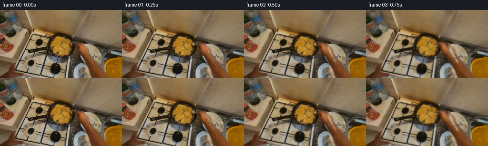
展开代码变化
--- 上一保存版本
+++ 本次保存版本
@@ -0,0 +1,179 @@
+from pathlib import Path
+import numpy as np
+from PIL import Image,ImageDraw,ImageFilter
+import cv2
+from artifact_io import save
+
+ROOT=Path(__file__).resolve().parent
+W,H=256,144
+S=3
+src=np.asarray(Image.open(ROOT/'first_frame.png').convert('RGB'))
+rng=np.random.default_rng(381)
+
+def poly_mask(points,blur=.25):
+ m=Image.new('L',(W*S,H*S))
+ ImageDraw.Draw(m).polygon([(round(x*S),round(y*S)) for x,y in points],fill=255)
+ if blur:m=m.filter(ImageFilter.GaussianBlur(blur*S))
+ return np.asarray(m,dtype=np.float32)/255
+
+arm_pts=[(158.0,73.3),(161.2,72.3),(165.0,71.7),(167.0,72.2),(168.8,70.9),(171.6,71.0),(174.8,73.8),(177.0,77.9),(178.5,81.8),(181.0,84.9),(182.1,89.2),(185.0,95.0),(189.0,102.3),(195.1,112.0),(203.4,123.0),(212.9,135.0),(220.9,145.0),(229,154),(205,157),(197.5,143.9),(191.4,134.0),(185.4,123.0),(179.8,112.4),(174.8,101.0),(171.1,93.9),(168.0,91.0),(166.5,87.6),(164.0,83.0),(161.1,79.7),(159,77)]
+arm_mask=poly_mask(arm_pts,.4)
+full=cv2.resize(src,(W*S,H*S),interpolation=cv2.INTER_CUBIC).astype(float)
+m_small=cv2.resize(arm_mask,(W,H))
+# Recover the countertop and the two partly hidden dishes using only their visible pixels.
+inmask=(m_small>.03).astype(np.uint8)*255
+background=cv2.inpaint(src,inmask,5,cv2.INPAINT_TELEA).astype(float)
+yy,xx=np.mgrid[:H,:W].astype(float)
+u=.918*(xx-190)-.397*(yy-95)
+v=.397*(xx-190)+.918*(yy-95)
+rx=190-.918*u+.397*v
+ry=95+.397*u+.918*v
+reflected=cv2.remap(src,rx.astype('float32'),ry.astype('float32'),cv2.INTER_CUBIC,borderMode=cv2.BORDER_REFLECT).astype(float)
+rm=cv2.remap(m_small,rx.astype('float32'),ry.astype('float32'),cv2.INTER_LINEAR)
+plate=((u/20.6)**2+(v/25.0)**2<1.0)&(rm<.06)&(m_small>.05)
+background[plate]=reflected[plate]
+# Continue the flour plate behind the lower forearm from its visible left half.
+rx2=(358-xx).astype('float32')
+ry2=yy.astype('float32')
+ref2=cv2.remap(src,rx2,ry2,cv2.INTER_CUBIC,borderMode=cv2.BORDER_REFLECT).astype(float)
+rm2=cv2.remap(m_small,rx2,ry2,cv2.INTER_LINEAR)
+p2=(((xx-178)/26)**2+((yy-139)/27)**2<1)&(yy>114)&(rm2<.05)&(m_small>.05)
+background[p2]=ref2[p2]
+# The vertical stainless divider continues down the right side of the lower plate.
+strip=(xx>207)&(yy>114)&(m_small>.05)
+metal=cv2.remap(src,np.full((H,W),217,dtype='float32'),np.minimum(yy,yy-17).astype('float32'),cv2.INTER_LINEAR).astype(float)
+background[strip]=metal[strip]*.92
+background=background*m_small[:,:,None]+src*(1-m_small[:,:,None])
+# Remove the original short metal utensil, which will be moved with the hand.
+fork_old=poly_mask([(146.5,68.5),(151,68.6),(162,73),(162,75),(151,72)],.2)
+fsmall=cv2.resize(fork_old,(W,H))
+background=cv2.inpaint(background.astype('uint8'),(fsmall>.15).astype('uint8')*255,2,cv2.INPAINT_TELEA).astype(float)
+
+# An individual cutlet at the center-right of the pan is freed from the oil bed.
+meat_points=[(132.8,69.7),(137,71),(139.4,73.8),(142.8,76.1),(146.5,79.2),(147.1,82.7),(145.3,86.1),(142.4,86.7),(139,85),(135.3,83.1),(132.3,80.8),(130.5,76.9),(130.5,73.1)]
+meatmask=poly_mask(meat_points,.2)
+mm=cv2.resize(meatmask,(W,H))
+# Background oil in the freed footprint: dark pan with small fried crumbs.
+noise=rng.normal(0,1,(H,W))
+baseoil=np.empty((H,W,3),float)
+baseoil[:]=[57,51,31]
+baseoil+=noise[:,:,None]*5
+for _ in range(130):
+ cx=rng.uniform(129,149);cy=rng.uniform(70,88);r=rng.uniform(.2,.75)
+ dot=np.exp(-((xx-cx)**2+(yy-cy)**2)/(2*r*r))
+ baseoil+=dot[:,:,None]*rng.uniform(12,45)*np.array([1,.9,.52])
+clean=background*(1-mm[:,:,None])+baseoil*mm[:,:,None]
+cleanfull=cv2.resize(clean,(W*S,H*S),interpolation=cv2.INTER_CUBIC)
+# Sampled breading texture is kept on both faces, with a browned underside.
+backface=full.copy()
+backface=backface*np.array([.88,.69,.50])[None,None,:]
+tex=cv2.GaussianBlur(rng.normal(0,1,(H*S,W*S)).astype('float32'),(0,0),.9)
+brown=np.clip((tex+.14)*.65,-.18,.15)
+backface+=brown[:,:,None]*np.array([56,32,15])
+# Irregular browned patches are modulated by smooth noise, rather than painted outlines.
+patch=cv2.GaussianBlur(rng.random((H*S,W*S)).astype('float32'),(0,0),2.0)
+patch=(patch-.49)*4
+backface-=np.maximum(patch,0)[:,:,None]*np.array([70,56,34])
+
+Y,X=np.mgrid[:H*S,:W*S].astype('float32')
+
+def overlay(base,color,mask):
+ return base*(1-mask[:,:,None])+color*mask[:,:,None]
+
+def smooth(q):
+ q=np.clip(q,0,1)
+ return q*q*(3-2*q)
+
+def interp(k,keys):
+ for (a,va),(b,vb) in zip(keys,keys[1:]):
+ if a<=k<=b:
+ t=smooth((k-a)/(b-a));return np.array(va)*(1-t)+np.array(vb)*t
+ return np.array(keys[-1][1])
+
+def utensil_layer(grip,tip,angle=0):
+ canvas=Image.new('RGBA',(W*S,H*S),(0,0,0,0))
+ d=ImageDraw.Draw(canvas)
+ a=np.array(grip)*S;b=np.array(tip)*S
+ direction=(a-b)/np.linalg.norm(a-b);perp=np.array([-direction[1],direction[0]])
+ # Slim, reflective fork. The food-side prongs slip underneath the cutlet.
+ end=b+direction*4*S
+ def line(p,q,col,width):d.line([tuple(p),tuple(q)],fill=col,width=max(1,int(width*S)))
+ line(a+perp*.35*S,end+perp*.35*S,(44,44,35,230),1.7)
+ line(a,end,(164,161,136,255),1.05)
+ line(a-perp*.25*S,end-perp*.25*S,(224,220,191,245),.34)
+ for offset in [-1.35,-.45,.45,1.35]:
+ p=end+perp*offset*S
+ q=b+perp*offset*S
+ line(p,q,(173,175,151,255),.48)
+ line(p-perp*.14*S,q-perp*.14*S,(219,219,195,220),.18)
+ return np.asarray(canvas)[:,:,:3].astype(float),np.asarray(canvas)[:,:,3].astype(float)/255
+
+frames=[src.copy()]
+for i in range(1,20):
+ # Reach, engage, lift, wrist-turn, lower, and retract. The elbow stays below frame.
+ dx,dy=interp(i,[(0,(0,0)),(5,(-15,-3)),(7,(-16,-5)),(9,(-13,-15)),(11,(-15,-10)),(13,(-15,-3)),(17,(-3,-1)),(19,(-4,-1.5))])
+ phi=float(interp(i,[(0,0),(6,0),(9,.5),(11,2.7),(13,np.pi),(19,np.pi)]))
+ lift=float(interp(i,[(0,0),(6,0),(8,7),(9,11),(10,12),(11,7),(13,0),(19,0)]))
+ shift=float(interp(i,[(0,0),(6,0),(9,-2),(13,-2),(19,-2)]))
+ theta=float(interp(i,[(0,0),(7,-.06),(10,-.18),(13,.13),(19,.13)]))
+ canvas=cleanfull.copy()
+ # Little glints in the hot oil are spatially confined to the pan, leaving solids unchanged.
+ oilregion=((X/S-128)/26)**2+((Y/S-76)/22)**2<1
+ lum=cv2.cvtColor(np.clip(full,0,255).astype('uint8'),cv2.COLOR_RGB2GRAY)
+ oilregion=oilregion&(lum<118)&(lum>44)&(meatmask<.15)
+ glint=(np.sin(X*.83+Y*1.07+i*1.95)+np.sin(X*1.51-Y*.41+i*.83))*1.1
+ canvas+=glint[:,:,None]*oilregion[:,:,None]*np.array([1,.95,.65])
+ center=np.array([138.5,78.4])*S
+ newcenter=center+np.array([shift,-lift])*S
+ c=np.cos(theta);s=np.sin(theta)
+ squash=max(.11,abs(np.cos(phi)))
+ # A perspective roll about the lateral axis changes the visible face at edge-on.
+ aff=np.array([[c,-s*squash],[s,c*squash]],dtype=float)
+ if phi>np.pi/2:aff[:,1]*=-1
+ M=np.c_[aff,newcenter-aff@center]
+ m=cv2.warpAffine(meatmask,M,(W*S,H*S),flags=cv2.INTER_LINEAR)
+ texture=full if phi<np.pi/2 else backface
+ col=cv2.warpAffine(texture,M,(W*S,H*S),flags=cv2.INTER_LINEAR)
+ # Contact shadow is softer and farther below the raised meat.
+ shadowM=M.copy();shadowM[:,2]+=np.array([.6,1.0+lift*.32])*S
+ shadow=cv2.warpAffine(meatmask,shadowM,(W*S,H*S),flags=cv2.INTER_LINEAR)
+ shadow=cv2.GaussianBlur(shadow,(0,0),(.5+lift*.1)*S)
+ canvas*=1-shadow[:,:,None]*(.22 if lift else .15)
+ grip=np.array([163.5,76.0])+[dx,dy]
+ target=np.array([144.5+shift,80.4-lift])
+ tip0=np.array([147.6,69.7])
+ reach=smooth(i/5)
+ tip=tip0*(1-reach)+target*reach
+ if i>14:tip+=np.array([1.5,0])*(i-14)
+ fork,fm=utensil_layer(grip,tip)
+ canvas=overlay(canvas,fork,fm)
+ # A thin golden edge makes the cutlet's thickness visible through the turn.
+ if lift>.5:
+ edgeM=M.copy();edgeM[1,2]+=.85*S
+ edge=cv2.warpAffine(meatmask,edgeM,(W*S,H*S),flags=cv2.INTER_LINEAR)
+ ec=np.clip(col*np.array([.73,.64,.47]),0,255)
+ # Extend sampled rim colors into the one-pixel exposed side.
+ ec=cv2.dilate(ec.astype('uint8'),np.ones((5,5),np.uint8)).astype(float)
+ canvas=overlay(canvas,ec,edge*.85)
+ canvas=overlay(canvas,col,m)
+ # Preserve photographic hand/forearm pixels, shearing around the offscreen elbow.
+ A=np.array([[1,-dx/68,dx*144/68*S],[0,1-dy/68,dy*144/68*S]],dtype=float)
+ movedmask=cv2.warpAffine(arm_mask,A,(W*S,H*S),flags=cv2.INTER_LINEAR)
+ movedhand=cv2.warpAffine(full,A,(W*S,H*S),flags=cv2.INTER_CUBIC)
+ # Mild changes in the skin illumination accompany wrist pronation.
+ lighting=1+.015*np.sin(phi)
+ movedhand*=lighting
+ ash=cv2.GaussianBlur(movedmask,(0,0),1.1*S)
+ canvas*=1-ash[:,:,None]*.07
+ canvas=overlay(canvas,movedhand,movedmask)
+ frame=cv2.resize(np.clip(canvas,0,255).astype('uint8'),(W,H),interpolation=cv2.INTER_AREA)
+ # Small egocentric head motion keeps the camera grounded in the action.
+ amount=smooth(min(i/4,1))
+ ang=.30*np.sin(i*.32)*amount
+ cam=cv2.getRotationMatrix2D((128,78),ang,1+.005*np.sin(i*.19)*amount)
+ cam[:,2]+=[.33*np.sin(i*.45)*amount,.35*np.sin(i*.35)*amount]
+ frame=cv2.warpAffine(frame,cam,(W,H),flags=cv2.INTER_LINEAR,borderMode=cv2.BORDER_REFLECT_101)
+ frames.append(frame)
+frames=np.asarray(frames,dtype=np.uint8)
+save(frames,ROOT)
+Image.fromarray(np.clip(background,0,255).astype('uint8')).resize((768,432)).save(ROOT/'.tmp/background.png')
候选 02播放与检查图
点击播放 · 原生 RGB 像素
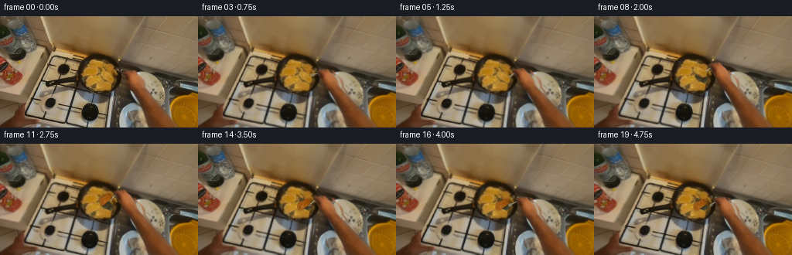
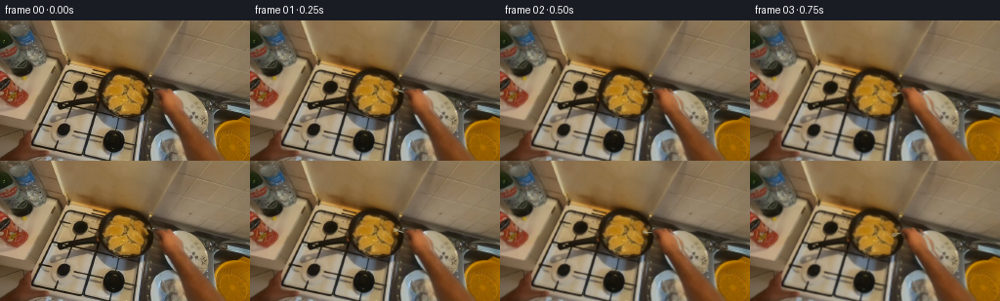
展开代码变化
--- 上一保存版本
+++ 本次保存版本
@@ -16,7 +16,7 @@
if blur:m=m.filter(ImageFilter.GaussianBlur(blur*S))
return np.asarray(m,dtype=np.float32)/255
-arm_pts=[(158.0,73.3),(161.2,72.3),(165.0,71.7),(167.0,72.2),(168.8,70.9),(171.6,71.0),(174.8,73.8),(177.0,77.9),(178.5,81.8),(181.0,84.9),(182.1,89.2),(185.0,95.0),(189.0,102.3),(195.1,112.0),(203.4,123.0),(212.9,135.0),(220.9,145.0),(229,154),(205,157),(197.5,143.9),(191.4,134.0),(185.4,123.0),(179.8,112.4),(174.8,101.0),(171.1,93.9),(168.0,91.0),(166.5,87.6),(164.0,83.0),(161.1,79.7),(159,77)]
+arm_pts=[(158,72.5),(162,71.5),(166.8,71.5),(168.8,70),(172.6,70.4),(176,74),(179.5,77),(182.5,81.5),(184.8,86.5),(185.7,91.5),(189,96),(194,101),(199,106),(203,111),(207.3,116),(211.8,121),(216.4,126),(220.4,131),(224.5,136),(228.5,141),(233,147),(204,155),(194,144.5),(192,138),(189.3,131),(186.8,125),(183.5,119),(180.5,112.5),(177.3,106),(174.0,100),(171,96),(168,93),(166.5,89),(164,85),(162,81),(160,77),(158,75)]
arm_mask=poly_mask(arm_pts,.4)
full=cv2.resize(src,(W*S,H*S),interpolation=cv2.INTER_CUBIC).astype(float)
m_small=cv2.resize(arm_mask,(W,H))
@@ -111,7 +111,7 @@
frames=[src.copy()]
for i in range(1,20):
# Reach, engage, lift, wrist-turn, lower, and retract. The elbow stays below frame.
- dx,dy=interp(i,[(0,(0,0)),(5,(-15,-3)),(7,(-16,-5)),(9,(-13,-15)),(11,(-15,-10)),(13,(-15,-3)),(17,(-3,-1)),(19,(-4,-1.5))])
+ dx,dy=interp(i,[(0,(0,0)),(5,(-8,-3)),(7,(-10,-5)),(9,(-10,-15)),(11,(-11,-10)),(13,(-10,-3)),(17,(-3,-1)),(19,(-4,-1.5))])
phi=float(interp(i,[(0,0),(6,0),(9,.5),(11,2.7),(13,np.pi),(19,np.pi)]))
lift=float(interp(i,[(0,0),(6,0),(8,7),(9,11),(10,12),(11,7),(13,0),(19,0)]))
shift=float(interp(i,[(0,0),(6,0),(9,-2),(13,-2),(19,-2)]))
@@ -139,7 +139,7 @@
shadow=cv2.warpAffine(meatmask,shadowM,(W*S,H*S),flags=cv2.INTER_LINEAR)
shadow=cv2.GaussianBlur(shadow,(0,0),(.5+lift*.1)*S)
canvas*=1-shadow[:,:,None]*(.22 if lift else .15)
- grip=np.array([163.5,76.0])+[dx,dy]
+ grip=np.array([162.0,75.0])+[dx,dy]
target=np.array([144.5+shift,80.4-lift])
tip0=np.array([147.6,69.7])
reach=smooth(i/5)
可观测工具轨迹
实际执行的命令与返回图片。
命令 1exit 0
/bin/bash -lc 'ls -la; cat prompt.txt; cat GENERATION_RULES.md'
命令 2exit 0
/bin/bash -lc "cat task_spec.json; cat artifact_io.py; python - <<'PY'
from PIL import Image
im=Image.open('first_frame.png');print(im.size);im.resize((1024,576)).save('.tmp/enlarged.png')
PY"命令 3exit 0
/bin/bash -lc "python - <<'PY'
from PIL import Image
im=Image.open('first_frame.png');im.crop((100,45,191,110)).resize((728,520)).save('.tmp/crop.png')
PY"命令 4exit 0
/bin/bash -lc "python - <<'PY' import importlib.util for m in ['numpy','PIL','scipy','cv2']:print(m, bool(importlib.util.find_spec(m))) PY"
命令 5exit 0
/bin/bash -lc "python - <<'PY'
from PIL import Image,ImageDraw
im=Image.open('first_frame.png').resize((1024,576));d=ImageDraw.Draw(im)
for x in range(100,231,10):d.line((x*4,180,x*4,576),fill=(255,0,0),width=1);d.text((x*4,180),str(x),fill=(255,255,255))
for y in range(50,144,10):d.line((400,y*4,900,y*4),fill=(255,0,0),width=1);d.text((400,y*4),str(y),fill=(255,255,255))
im.save('.tmp/grid.png')
PY"命令 6exit 0
/bin/bash -lc "python - <<'PY'
from PIL import Image
Image.open('first_frame.png').crop((151,65,235,144)).resize((672,632)).save('.tmp/arm.png')
PY"命令 7exit 0
/bin/bash -lc "cat > generate.py <<'PY'
from pathlib import Path
import numpy as np
from PIL import Image,ImageDraw,ImageFilter
import cv2
from artifact_io import save
ROOT=Path(__file__).resolve().parent
W,H=256,144
S=3
src=np.asarray(Image.open(ROOT/'first_frame.png').convert('RGB'))
rng=np.random.default_rng(381)
def poly_mask(points,blur=.25):
m=Image.new('L',(W*S,H*S))
ImageDraw.Draw(m).polygon([(round(x*S),round(y*S)) for x,y in points],fill=255)
if blur:m=m.filter(ImageFilter.GaussianBlur(blur*S))
return np.asarray(m,dtype=np.float32)/255
arm_pts=[(158.0,73.3),(161.2,72.3),(165.0,71.7),(167.0,72.2),(168.8,70.9),(171.6,71.0),(174.8,73.8),(177.0,77.9),(178.5,81.8),(181.0,84.9),(182.1,89.2),(185.0,95.0),(189.0,102.3),(195.1,112.0),(203.4,123.0),(212.9,135.0),(220.9,145.0),(229,154),(205,157),(197.5,143.9),(191.4,134.0),(185.4,123.0),(179.8,112.4),(174.8,101.0),(171.1,93.9),(168.0,91.0),(166.5,87.6),(164.0,83.0),(161.1,79.7),(159,77)]
arm_mask=poly_mask(arm_pts,.4)
full=cv2.resize(src,(W*S,H*S),interpolation=cv2.INTER_CUBIC).astype(float)
m_small=cv2.resize(arm_mask,(W,H))
# Recover the countertop and the two partly hidden dishes using only their visible pixels.
inmask=(m_small>.03).astype(np.uint8)*255
background=cv2.inpaint(src,inmask,5,cv2.INPAINT_TELEA).astype(float)
yy,xx=np.mgrid[:H,:W].astype(float)
u=.918*(xx-190)-.397*(yy-95)
v=.397*(xx-190)+.918*(yy-95)
rx=190-.918*u+.397*v
ry=95+.397*u+.918*v
reflected=cv2.remap(src,rx.astype('float32'),ry.astype('float32'),cv2.INTER_CUBIC,borderMode=cv2.BORDER_REFLECT).astype(float)
rm=cv2.remap(m_small,rx.astype('float32'),ry.astype('float32'),cv2.INTER_LINEAR)
plate=((u/20.6)**2+(v/25.0)**2<1.0)&(rm<.06)&(m_small>.05)
background[plate]=reflected[plate]
# Continue the flour plate behind the lower forearm from its visible left half.
rx2=(358-xx).astype('float32')
ry2=yy.astype('float32')
ref2=cv2.remap(src,rx2,ry2,cv2.INTER_CUBIC,borderMode=cv2.BORDER_REFLECT).astype(float)
rm2=cv2.remap(m_small,rx2,ry2,cv2.INTER_LINEAR)
p2=(((xx-178)/26)**2+((yy-139)/27)**2<1)&(yy>114)&(rm2<.05)&(m_small>.05)
background[p2]=ref2[p2]
# The vertical stainless divider continues down the right side of the lower plate.
strip=(xx>207)&(yy>114)&(m_small>.05)
metal=cv2.remap(src,np.full((H,W),217,dtype='float32'),np.minimum(yy,yy-17).astype('float32'),cv2.INTER_LINEAR).astype(float)
background[strip]=metal[strip]*.92
background=background*m_small[:,:,None]+src*(1-m_small[:,:,None])
# Remove the original short metal utensil, which will be moved with the hand.
fork_old=poly_mask([(146.5,68.5),(151,68.6),(162,73),(162,75),(151,72)],.2)
fsmall=cv2.resize(fork_old,(W,H))
background=cv2.inpaint(background.astype('uint8'),(fsmall>.15).astype('uint8')*255,2,cv2.INPAINT_TELEA).astype(float)
# An individual cutlet at the center-right of the pan is freed from the oil bed.
meat_points=[(132.8,69.7),(137,71),(139.4,73.8),(142.8,76.1),(146.5,79.2),(147.1,82.7),(145.3,86.1),(142.4,86.7),(139,85),(135.3,83.1),(132.3,80.8),(130.5,76.9),(130.5,73.1)]
meatmask=poly_mask(meat_points,.2)
mm=cv2.resize(meatmask,(W,H))
# Background oil in the freed footprint: dark pan with small fried crumbs.
noise=rng.normal(0,1,(H,W))
baseoil=np.empty((H,W,3),float)
baseoil[:]=[57,51,31]
baseoil+=noise[:,:,None]*5
for _ in range(130):
cx=rng.uniform(129,149);cy=rng.uniform(70,88);r=rng.uniform(.2,.75)
dot=np.exp(-((xx-cx)**2+(yy-cy)**2)/(2*r*r))
baseoil+=dot[:,:,None]*rng.uniform(12,45)*np.array([1,.9,.52])
clean=background*(1-mm[:,:,None])+baseoil*mm[:,:,None]
cleanfull=cv2.resize(clean,(W*S,H*S),interpolation=cv2.INTER_CUBIC)
# Sampled breading texture is kept on both faces, with a browned underside.
backface=full.copy()
backface=backface*np.array([.88,.69,.50])[None,None,:]
tex=cv2.GaussianBlur(rng.normal(0,1,(H*S,W*S)).astype('float32'),(0,0),.9)
brown=np.clip((tex+.14)*.65,-.18,.15)
backface+=brown[:,:,None]*np.array([56,32,15])
# Irregular browned patches are modulated by smooth noise, rather than painted outlines.
patch=cv2.GaussianBlur(rng.random((H*S,W*S)).astype('float32'),(0,0),2.0)
patch=(patch-.49)*4
backface-=np.maximum(patch,0)[:,:,None]*np.array([70,56,34])
Y,X=np.mgrid[:H*S,:W*S].astype('float32')
def overlay(base,color,mask):
return base*(1-mask[:,:,None])+color*mask[:,:,None]
def smooth(q):
q=np.clip(q,0,1)
return q*q*(3-2*q)
def interp(k,keys):
for (a,va),(b,vb) in zip(keys,keys[1:]):
if a<=k<=b:
t=smooth((k-a)/(b-a));return np.array(va)*(1-t)+np.array(vb)*t
return np.array(keys[-1][1])
def utensil_layer(grip,tip,angle=0):
canvas=Image.new('RGBA',(W*S,H*S),(0,0,0,0))
d=ImageDraw.Draw(canvas)
a=np.array(grip)*S;b=np.array(tip)*S
direction=(a-b)/np.linalg.norm(a-b);perp=np.array([-direction[1],direction[0]])
# Slim, reflective fork. The food-side prongs slip underneath the cutlet.
end=b+direction*4*S
def line(p,q,col,width):d.line([tuple(p),tuple(q)],fill=col,width=max(1,int(width*S)))
line(a+perp*.35*S,end+perp*.35*S,(44,44,35,230),1.7)
line(a,end,(164,161,136,255),1.05)
line(a-perp*.25*S,end-perp*.25*S,(224,220,191,245),.34)
for offset in [-1.35,-.45,.45,1.35]:
p=end+perp*offset*S
q=b+perp*offset*S
line(p,q,(173,175,151,255),.48)
line(p-perp*.14*S,q-perp*.14*S,(219,219,195,220),.18)
return np.asarray(canvas)[:,:,:3].astype(float),np.asarray(canvas)[:,:,3].astype(float)/255
frames=[src.copy()]
for i in range(1,20):
# Reach, engage, lift, wrist-turn, lower, and retract. The elbow stays below frame.
dx,dy=interp(i,[(0,(0,0)),(5,(-15,-3)),(7,(-16,-5)),(9,(-13,-15)),(11,(-15,-10)),(13,(-15,-3)),(17,(-3,-1)),(19,(-4,-1.5))])
phi=float(interp(i,[(0,0),(6,0),(9,.5),(11,2.7),(13,np.pi),(19,np.pi)]))
lift=float(interp(i,[(0,0),(6,0),(8,7),(9,11),(10,12),(11,7),(13,0),(19,0)]))
shift=float(interp(i,[(0,0),(6,0),(9,-2),(13,-2),(19,-2)]))
theta=float(interp(i,[(0,0),(7,-.06),(10,-.18),(13,.13),(19,.13)]))
canvas=cleanfull.copy()
# Little glints in the hot oil are spatially confined to the pan, leaving solids unchanged.
oilregion=((X/S-128)/26)**2+((Y/S-76)/22)**2<1
lum=cv2.cvtColor(np.clip(full,0,255).astype('uint8'),cv2.COLOR_RGB2GRAY)
oilregion=oilregion&(lum<118)&(lum>44)&(meatmask<.15)
glint=(np.sin(X*.83+Y*1.07+i*1.95)+np.sin(X*1.51-Y*.41+i*.83))*1.1
canvas+=glint[:,:,None]*oilregion[:,:,None]*np.array([1,.95,.65])
center=np.array([138.5,78.4])*S
newcenter=center+np.array([shift,-lift])*S
c=np.cos(theta);s=np.sin(theta)
squash=max(.11,abs(np.cos(phi)))
# A perspective roll about the lateral axis changes the visible face at edge-on.
aff=np.array([[c,-s*squash],[s,c*squash]],dtype=float)
if phi>np.pi/2:aff[:,1]*=-1
M=np.c_[aff,newcenter-aff@center]
m=cv2.warpAffine(meatmask,M,(W*S,H*S),flags=cv2.INTER_LINEAR)
texture=full if phi<np.pi/2 else backface
col=cv2.warpAffine(texture,M,(W*S,H*S),flags=cv2.INTER_LINEAR)
# Contact shadow is softer and farther below the raised meat.
shadowM=M.copy();shadowM[:,2]+=np.array([.6,1.0+lift*.32])*S
shadow=cv2.warpAffine(meatmask,shadowM,(W*S,H*S),flags=cv2.INTER_LINEAR)
shadow=cv2.GaussianBlur(shadow,(0,0),(.5+lift*.1)*S)
canvas*=1-shadow[:,:,None]*(.22 if lift else .15)
grip=np.array([163.5,76.0])+[dx,dy]
target=np.array([144.5+shift,80.4-lift])
tip0=np.array([147.6,69.7])
reach=smooth(i/5)
tip=tip0*(1-reach)+target*reach
if i>14:tip+=np.array([1.5,0])*(i-14)
fork,fm=utensil_layer(grip,tip)
canvas=overlay(canvas,fork,fm)
# A thin golden edge makes the cutlet's thickness visible through the turn.
if lift>.5:
edgeM=M.copy();edgeM[1,2]+=.85*S
edge=cv2.warpAffine(meatmask,edgeM,(W*S,H*S),flags=cv2.INTER_LINEAR)
ec=np.clip(col*np.array([.73,.64,.47]),0,255)
# Extend sampled rim colors into the one-pixel exposed side.
ec=cv2.dilate(ec.astype('uint8'),np.ones((5,5),np.uint8)).astype(float)
canvas=overlay(canvas,ec,edge*.85)
canvas=overlay(canvas,col,m)
# Preserve photographic hand/forearm pixels, shearing around the offscreen elbow.
A=np.array([[1,-dx/68,dx*144/68*S],[0,1-dy/68,dy*144/68*S]],dtype=float)
movedmask=cv2.warpAffine(arm_mask,A,(W*S,H*S),flags=cv2.INTER_LINEAR)
movedhand=cv2.warpAffine(full,A,(W*S,H*S),flags=cv2.INTER_CUBIC)
# Mild changes in the skin illumination accompany wrist pronation.
lighting=1+.015*np.sin(phi)
movedhand*=lighting
ash=cv2.GaussianBlur(movedmask,(0,0),1.1*S)
canvas*=1-ash[:,:,None]*.07
canvas=overlay(canvas,movedhand,movedmask)
frame=cv2.resize(np.clip(canvas,0,255).astype('uint8'),(W,H),interpolation=cv2.INTER_AREA)
# Small egocentric head motion keeps the camera grounded in the action.
amount=smooth(min(i/4,1))
ang=.30*np.sin(i*.32)*amount
cam=cv2.getRotationMatrix2D((128,78),ang,1+.005*np.sin(i*.19)*amount)
cam[:,2]+=[.33*np.sin(i*.45)*amount,.35*np.sin(i*.35)*amount]
frame=cv2.warpAffine(frame,cam,(W,H),flags=cv2.INTER_LINEAR,borderMode=cv2.BORDER_REFLECT_101)
frames.append(frame)
frames=np.asarray(frames,dtype=np.uint8)
save(frames,ROOT)
Image.fromarray(np.clip(background,0,255).astype('uint8')).resize((768,432)).save(ROOT/'.tmp/background.png')
PY
python generate.py"命令 8exit 0
/bin/bash -lc "python - <<'PY'
from PIL import Image,ImageDraw
im=Image.open('first_frame.png').resize((1280,720));d=ImageDraw.Draw(im)
for x in range(155,236,5):d.line((x*5,340,x*5,720),fill=(0,255,200),width=1);d.text((x*5,330),str(x),fill=(255,255,255))
for y in range(70,144,5):d.line((760,y*5,1190,y*5),fill=(0,255,200),width=1);d.text((755,y*5),str(y),fill=(255,255,255))
im.crop((755,325,1180,720)).save('.tmp/finegrid.png')
PY"命令 9exit 0
/bin/bash -lc "python - <<'PY'
from PIL import Image
import numpy as np
im=np.array(Image.open('first_frame.png')).astype(float)
for y in range(70,144,5):
print(y,[(x,tuple(im[y,x].astype(int))) for x in range(160,226,3) if im[y,x,0]>im[y,x,1]*1.25 and im[y,x,1]>im[y,x,2]*1.15])
PY"命令 10exit 0
/bin/bash -lc "python - <<'PY'
p='generate.py'
s=open(p).read()
a=s.index('arm_pts=');b=s.index('\\narm_mask=',a)
s=s[:a]+'''arm_pts=[(158,72.5),(162,71.5),(166.8,71.5),(168.8,70),(172.6,70.4),(176,74),(179.5,77),(182.5,81.5),(184.8,86.5),(185.7,91.5),(189,96),(194,101),(199,106),(203,111),(207.3,116),(211.8,121),(216.4,126),(220.4,131),(224.5,136),(228.5,141),(233,147),(204,155),(194,144.5),(192,138),(189.3,131),(186.8,125),(183.5,119),(180.5,112.5),(177.3,106),(174.0,100),(171,96),(168,93),(166.5,89),(164,85),(162,81),(160,77),(158,75)]'''+s[b:]
s=s.replace('(5,(-15,-3)),(7,(-16,-5)),(9,(-13,-15)),(11,(-15,-10)),(13,(-15,-3))','(5,(-8,-3)),(7,(-10,-5)),(9,(-10,-15)),(11,(-11,-10)),(13,(-10,-3))')
s=s.replace('grip=np.array([163.5,76.0])','grip=np.array([162.0,75.0])')
open(p,'w').write(s)
PY
python generate.py"命令 11exit 0
/bin/bash -lc "python - <<'PY'
from PIL import Image,ImageDraw
out=Image.new('RGB',(6*400,320))
for j,i in enumerate([6,8,9,10,11,13]):
im=Image.open(f'frames/{i:02}.png').crop((105,47,185,111)).resize((400,320));out.paste(im,(j*400,0))
out.save('.tmp/flip.png')
PY"命令 12exit 0
/bin/bash -lc "python - <<'PY'
import numpy as np
from PIL import Image
from pathlib import Path
ps=sorted(Path('frames').glob('*.png'))
f=np.stack([np.asarray(Image.open(p)) for p in ps])
assert f.shape==(20,144,256,3) and f.dtype==np.uint8
assert np.array_equal(f[0],np.asarray(Image.open('first_frame.png').convert('RGB')))
p=np.load('pixels.npz')['pixels'];assert p.shape==(144,256,20)
print('Validated: 20 uint8 RGB frames, 256Ã144, exact first frame; packed artifact matches shape.')
PY
command -v ffmpeg || true"视觉工具实际返回图片 1
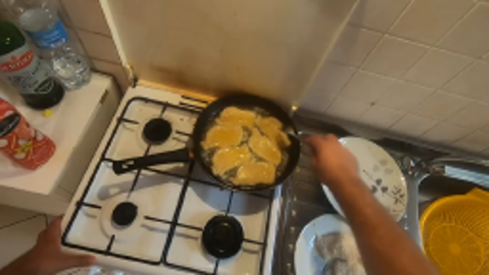
视觉工具实际返回图片 2
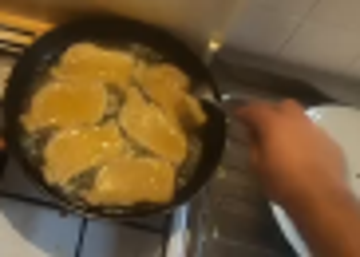
视觉工具实际返回图片 3
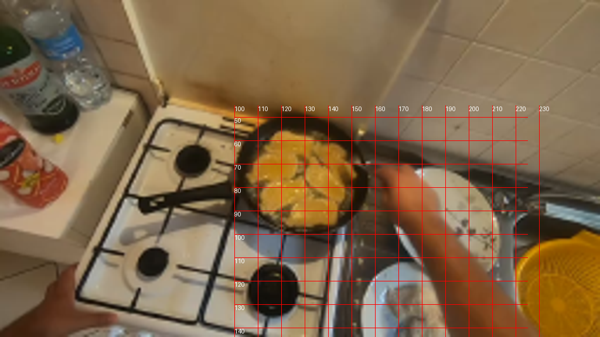
视觉工具实际返回图片 4
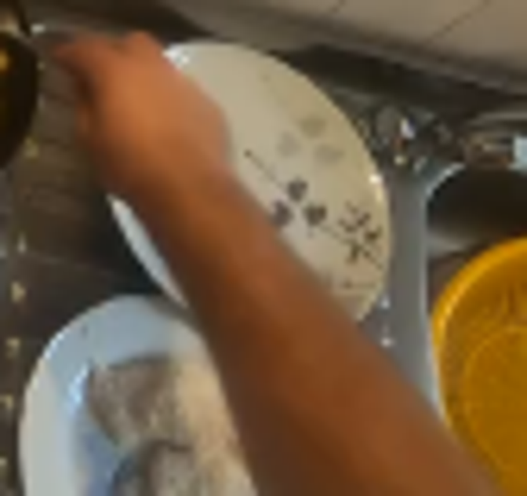
视觉工具实际返回图片 5
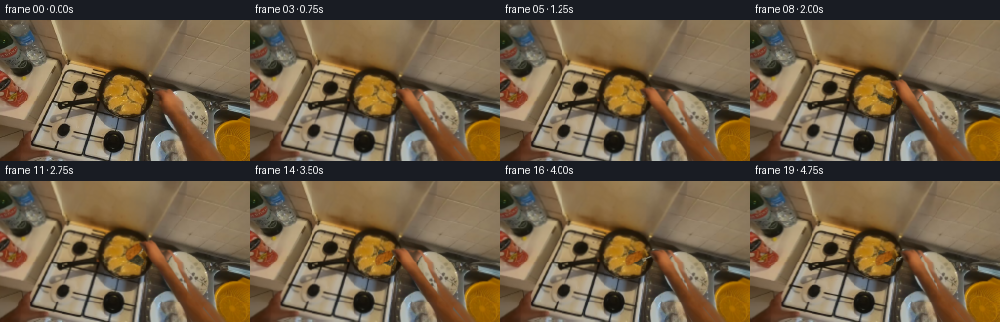
视觉工具实际返回图片 6
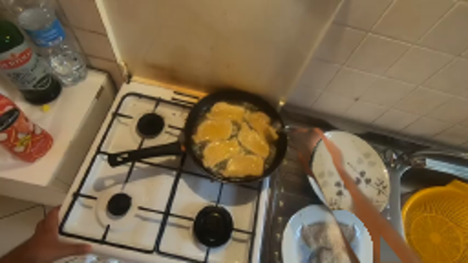
视觉工具实际返回图片 7
视觉工具实际返回图片 8

视觉工具实际返回图片 9
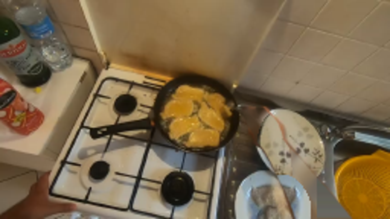
视觉工具实际返回图片 10
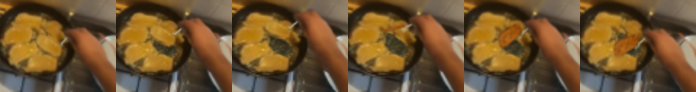
保存候选 2 份；完成命令 12 次；可验证图片返回 10 张。原始 API 响应与完整日志保留在本地。